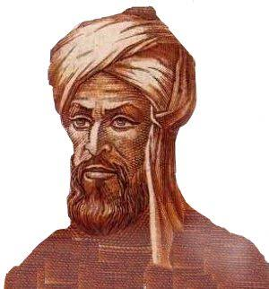

1114–1185
Indian
Algebra, geometry, astronomy
Bhaskara II (also called Bhaskaracharya, "Bhaskara the Teacher") was born in 1114 in Bijapur, in present-day Karnataka. He was the head of the astronomical observatory at Ujjain, the foremost centre of mathematical learning in medieval India, a position previously held by Brahmagupta and Varahamihira.
His most famous appearance in this course is his proof of the Pythagorean theorem — a wordless diagram of four right triangles arranged inside a square, accompanied only by the caption "Behold!" The construction is so elegant it needs no explanation: the areas simply force $a^2 + b^2 = c^2$.
Bhaskara's mathematical output was vast. His Siddhanta Shiromani covered arithmetic, algebra, the geometry of spheres, and astronomy. The algebra section (Bijaganita) includes work on indeterminate equations, surds, and permutations. He solved the general Pell equation $x^2 - 61y^2 = 1$ (finding the solution $x = 1766319049$, $y = 226153980$) using the chakravala method, a cyclic algorithm that European mathematicians would not match until Euler and Lagrange in the 18th century. He also computed instantaneous rates of change of trigonometric functions, anticipating differential calculus by five hundred years.
| Phase | Page | Referenced for |
|---|---|---|
| Phase 0 | The Pythagorean Theorem | Visual "Behold!" proof of the Pythagorean theorem |
| Phase 0 | The Pythagorean Theorem | Wordless diagram proof — areas force the result |